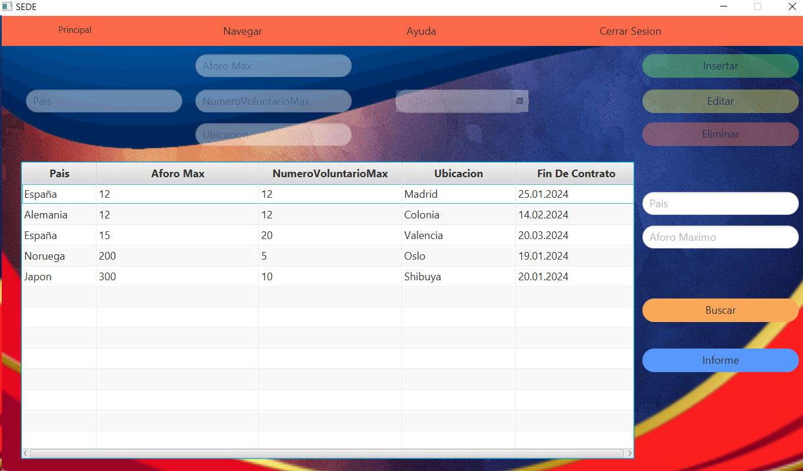
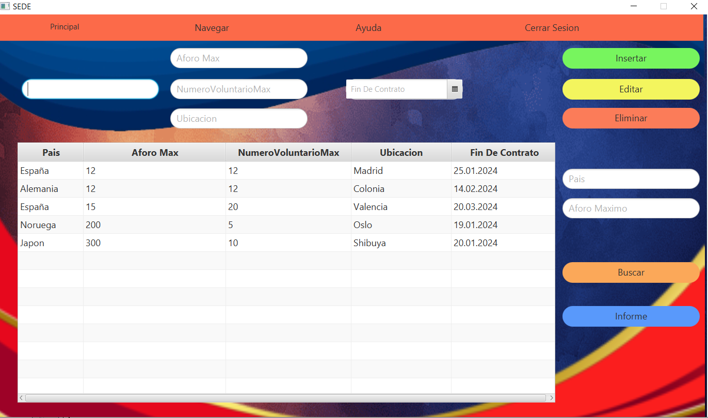
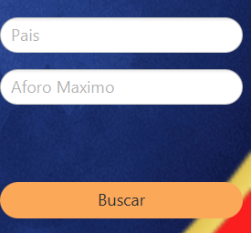
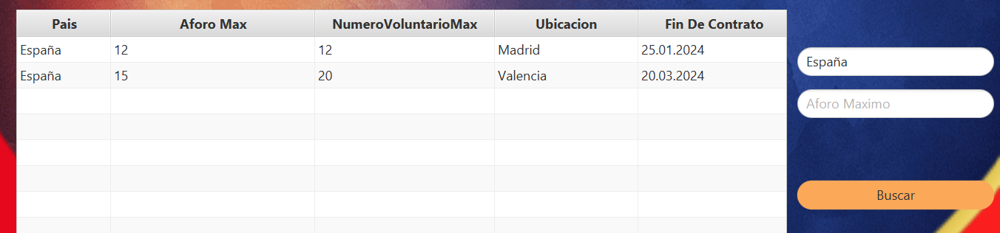
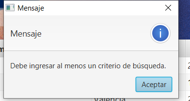
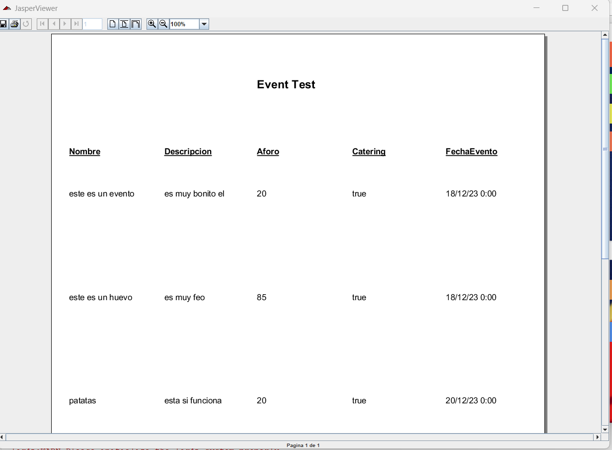
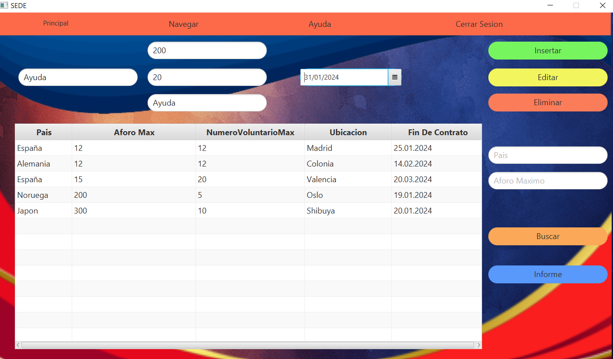
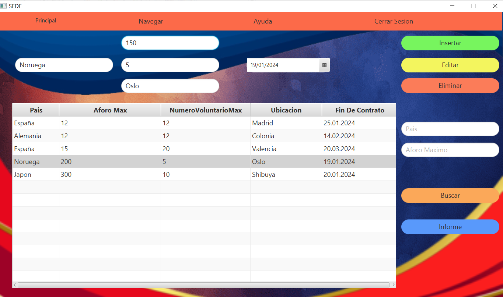
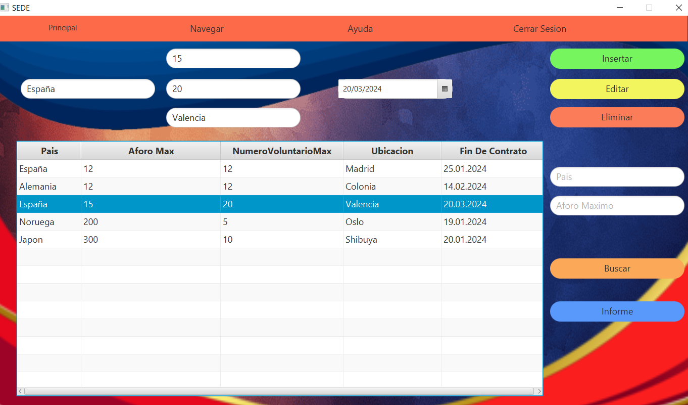
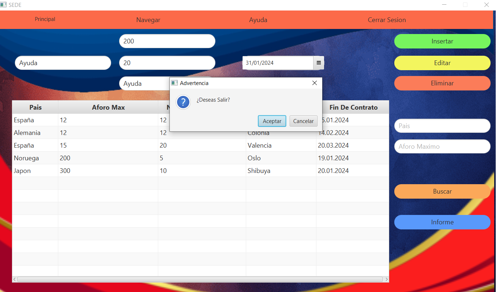

Fig 1: Ventana Sede
Al abrir la ventana, se mostrará una ventana como la de arriba, al ser un Usuario de tipo Voluntario, sus acciones están limitadas, por lo que solo podra filtrar , ver sedes, generar un informe y ver los eventos de la sede seleccionada en la tabla.
Fig 2: Al abrirse la ventana, estaran habilitadas todas las opcion de la ventana, siempre y cuando el tipo de Usuario sea Socio"
Fig 3: Esto es el filtrado:
Para usarlo solo hay que hacer click en el boton que hay debajo de donde pone "Buscar" y aparecerán dos opciones de filtrado por pais y por aforo maximo.
Fig 4: Por ejemplo, al elegir filtrar por pais, la tabla mostrará una lista de sedes en ese pais
En caso de que se intente filtrar un dato inexistente, la tabla, simplemente, no mostrará nada.
Fig 5: En caso de intentar filtar, cuando los campos de filtrados estan vacios, saltara un mensaje.
Fig 6: Para generar un informe solo tiene que darle al botón de informe.
Fig 6.2: Para introducir una nueva sede rellenariamos los campos y le daremos al boton de insertar.
Fig 6.3: Para editar una sede seleccionaremos la sede que queremos editar de la tabla, a continuacion se nos rellenaran los campos con los datos, cambiaremos el datos o los datos que queremos editar y le daremos al boton de editar.
Fig 6.4: Para eliminar un sede seleccionaremos una sede de la tabla y le daremos al boton de eliminar.
Fig 7: Si desea salir de la aplicación, haga click en el botón de cerrar y se abrirá una ventana de advertencia para confirmar la salida de la ventana.
Fig 8: Navegación Menubar
Arriba tenemos un menubar para navegar entre distintas ventanas, con varias opciones: